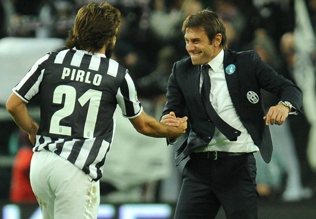

Történelem:
1897 ALAPÍTÁS
Olaszország legsikeresebb klubjának teljes neve Juventus Football Club S.p.A., székhelye az észak-olasz Piemont tartományban fekvő Torinó városában található. A sikersztori 1897. november 1-jén kezdődött, amikor is néhány középiskolás elhatározta, hogy klubformába öntik kis csapatukat és így hódolnak tovább az Angliából „importált” új sportnak, a labdarúgásnak. A klub nevének eredete is fiatal korukhoz köthető, hiszen egyik alapító sem volt idősebb 17 évesnél, ezért a Juventus (latinul: fiatalság) név kézenfekvő tűnt. A fiúk 1900-ban, akkor még rózsaszínű mezben, vágtak neki először a nemzeti bajnokságnak. Három évvel később már fekete-fehér színekben pompáztak a mezek, ehhez pedig a Notts County csapata adta az inspirációt. Így az első scudettót már zebracsíkos szerelésben nyerte a csapat 1905-ban. Nem sokkal ezután az addigi elnök, Alfredo Dick elhagyta a klubot és megalapította a város másik csapatát, a Torinót.
Az Agnelli család átveszi az uralmat
Az első világháború után a Juve játékosai a nemzeti tizenegyben is megvetették lábukat, a kapus Giacone és két védőtársa, Novo és Bruna voltak az elsők, akik meghívót kaptak a Squadra Azzurrába. 1923 eredményes év volt a klub számára volt, hiszen Gianpiero Combi, a Juve valaha volt egyik legjobb kapusa ekkor mutatkozott be a nemzeti csapatban, valamint Edoardo Agnellit is megválasztották elnöknek. A Juventus gyarapodni és erősödni kezdett, kinevezték az első hivatalos edzőt, a magyar Károly Jenőt, aki három évig irányította a zebrákat. Emellett a csapathoz került az első jelentős játékerőt képviselő külföldi játékos is, a szintén magyar Hirzer Ferenc, aki 35 találatot jegyzett egyetlen szezon alatt, ami azóta is egyedülálló. 1926-ban eljött a második bajnoki cím ideje is, majd 1931 és 1935 között zsinórban öt Scudetti került Torinóba, ami a napig holtversenyben rekordnak számít a Olaszországban. Emellett a Bianconeri nagy szerepet játszott az 1934-ben világbajnoki címig jutó olasz válogatott sikerében is, amelynek gerincét adta. Ekkoriban tűnt fel a csapat a nemzetközi klubporondon is, ahol a Bajnokok Ligája elődjében mutathatta meg magát.
Siker-Siker hátán, Heysel tragédia
A második világháború után Gianni Agnelli követte apját az elnöki székben egy olyan sikerkorszak kezdetén, amelyben Carlo Parola, John Hansen és Gianpiero Boniperti neve jelentette a garanciát. Omar Sivori és John Charles érkeztével ismét egy hihetetlenül eredményes időszak kezdődött, segítségükkel 1958-ban már tízszeres bajnoknak mondhatta magát az Öreg Hölgy és így felvarrhatta mezére az első csillagot. Boniperti karrierjének bejezése után is hű maradt a klubhoz, hiszen 1971-ben elnökké választották. A legenda elnöksége alatt a Juve minden elért, amit csapat elérhet: kilenc Scudetti, -többek között 1982-ben a második csillagot hozó huszadik bajnok cím-, UEFA kupa 1977-ben, KEK 1984-ben és természetesen az első BEK-győzelem. Sajnos utóbbit beárnyékolta a történelem egyik legnagyobb futballtragédiája, 1985. május 29-én került sor a futball fekete napjára, a Heysel tragédiára, amely a 70-es és 80-as évek futball huliganizmusára vezethető vissza. A Liverpool-Juventus döntő előtt az angol szurkolói átmásztak az ellenfél szektorába, rátámadtak az menekülő olaszokra, a stadion omladozó fala pedig a megnövekedett nyomás terhel alatt összedőlt. Ennek következtében pedig 39 ártatlan drukker lelte halálát Brüsszelben. A szervezők a nagyobb baj elkerülése végett a mérkőzés lejátszása mellett döntöttek, amelyet a Juve nyert, megszerezve első BEK-győzelmét. Rögtön ezután az Interkontinális Kupát is elhódította az Öreg Hölgy. Mindezt Giovanni Trapattoni irányítása alatt, olyan játékosokkal teletűzdelt csapattal, mint Gaetano Scirea, Marco Tardelli, Paolo Rossi vagy Michel Platini.
Zoff féle Juve
A dicsőséges évek után egy kevésbé sikeres, de annál fájdalmasabb periódus következett. Platini 1987-ben szögre akasztotta cipőjét, a 1988-ban pedig Dino Zoff vette át a csapat irányítását. A zebrák ugyan 1990-ben elhódították az UEFA kupát, de valószínűleg minden juventino könnyes szemmel emlékszik vissza arra a kupa kiírásra. Zoff jó barátja és korábbi csapattársa, Scirea segítvén az edző munkáját megfigyelőként Lengyelországba utazott, hogy feltérképezze a Juve soron következő ellenfelét. Az úton azonban végzetes autóbalesetet szenvedett, így azóta szeptember 3. gyásznappá vált a Bianconeri történelmében.
Lippi és a Triád
1994-ban a klub belekezdett egy nagy átalakulási folyamatba, hiszen az ügyvezetésért a Roberto Bettega, Antonio Giraudo, Luciano Moggi triád lett a felelős, míg a csapat vezetését Marcello Lippi vette át. Ferrara és Deschamps ekkor érkezett a csapathoz, akik az akkor már oszlopos tagként itt játszó Baggioval, Viallival és Ravanellivel, valamint az egy éve a Juvénál focizó fiatal tehetséggel félelmetes együttest alkottak. Az ifjú titán természetesen nem más, mint az 1993-ban leigazolt Alessandro Del Piero. Az ellenfelek félelme pedig nem volt alaptalan, 1995-ben a csapat besöpörte a bajnokságot, a kupát és a szuperkupát is, sőt az UEFA kupa döntőjéig menetelt. Utóbbi elhódítása a Parma ellen nem sikerült, emellett egy szomorú esemény, Andrea Fortunato április 25-i halála is beárnyékolta azt a periódust. A következő szezonban aztán megtörtént azt, aminek meg kellett történnie. A világ fel volt készülve rá, hogy egyszer eljön az, amikor a Juventus tarolni fog. A Bajnokok Ligájában a Real Madridot és Nantes-ot kiejtő Öreg Hölgy a regnáló bajnokkal, az Ajaxszal játszhatott döntőt Romában. A rendes játékidőben Ravanelli hihetetlenül éles szögből szerzett góljára Litmanen tudott válaszolni, majd a döntetlen a hosszabbítás után is maradt. Következett a büntetőpárbaj, ahol a Juve-különítmény (Ferrara, Pessotto, Padovano, Jugović) minden tagja biztos lábbal értékesítette a tizenegyest, míg Peruzzi két lövést is hárítani tudott. Így amikor Vialli magasba emelte a kupát, mindenkiben tudatosulhatott: a Juventus ismét felért Európa csúcsára. Ezután örömjáték következett, az európai szuperkupában a torinói alakulat lemosta a pályáról a PSG csapatát, összesítésben 9-2-ben nyertek a franciák ellen. Slusszpoénként pedig a tokiói Interkontinentális kupát is bezsebelte a csapat, ahol Del Piero góljával 1-0-ra verték a River Plate-et. Utóbbi mérkőzésen a friss igazolások, Montero és Zidane is szerepet kaptak. A folytatás kevésbé fényes, mivel zsinórban még két sikertelen BL-döntő következett. 1997-ben a Borussia Dortmund csapata tréfálta meg a Juvét, ahol két korábbi „zebra” is volt csapattársai ellen lépett pályára: Andreas Möller és Paulo Sousa. Egy évre rá a Bianconeri sorozatban a harmadik BL-döntőjét játszhatta, de Predrag Mijatović góljával végül a Real Madrid ért révbe. Ráadásul 1998 novemberében Del Piero súlyos sérülést szenvedett, a csapat pedig zátonyra futott, ezért a kispadon Ancelotti váltotta Lippit.
Lippi visszatér
Két sikertelen év után 2001-ben Lippi visszatért szeretett csapatához. Sajnos ekkortól nélkülözni kellett Zidane-t és Inzaghit, de helyettük érkezett a Buffon, Thuram, Nedvěd hármas. Lippi visszatérése emlékezetesre sikeredett, a Juve akkor nyerte meg -az Inter ellenében- a 26. Scudettoját. 2003 ismét egy szomorú év az Öreg Hölgy számára, hiszen év elején elhunyt az „Avvocato”, azaz Gianni Agnelli, majd tavasszal egy vesztett BL-finálé következett, amolyan olasz házi döntő a Milan ellen, ahol Pavel Nedvěd sárga lapjai miatt nem léphetett pályára. A hosszabbítás sem hozott döntést, így a büntetők következtek, ahol a Rossoneri bizonyult jobbnak.
Capello, Calciopoli, Visszasorolás
2004-ben a sokak által a játék képe miatt szidott Capello-korszak vette kezdetét, olyan játékosok érkezése mellett, mint Emerson, Fabio Cannavaro vagy Zlatan Ibrahimović. A csapat 2005-ben és 2006-ban is bajnokságot nyert, de a 2006 nyarán kitört, Calciopoli néven hírhedtté vált botrány. A mai napig megkérdőjelezhető tárgyalássorozat végén a Juventust és a klub vezetőségét kiáltották ki bűnbaknak és visszasorolták a másodosztályba, pontlevonással sújtották és megfosztották az említett két címtől.A klub természetesen elvesztette meghatározó játékosai egy részét és jelentős bevételi forrástól esett el, holott több részlet még mindig tisztázatlan az ügyben, sőt egyéb klubok is belekeveredtek azóta a botrányba, eddig bármilyen nemű retorzió nélkül.
Egyszer fent, Egyszer lent
A korábbi Juve-legenda Didier Deschamps vezérletével a Juve azonnal megnyerte a Serie B-t és visszajutott az élvonalba. A csapat fiatalokkal volt teletűzdelve, de emellett olyan nagyságok hűségét is élvezte, mint a világbajnok Del Piero, Buffon, Camoranesi és Trezeguet vagy az aranylabdás Nedvěd. Visszatérése után, köszönhető a Del Piero-Trezeguet páros nagyszerű teljesítményének, rögtön a harmadik helyen végzett a csapat. Így pedig a Juve kvalifikálta magát a Bajnokok Ligájába, amihez a két csatár együtt 41 góllal járult hozzá. Ekkorra azonban sűrűsödni kezdtek a fekete fellegek Torinó felett, mivel a Calciopoli után nem rendeződött megnyugtatóan a klub helyzete. Bár az időközben kinevezett Ciro Ferrara még második helyre vezette a Bianconerit, ám Rianierihez hasonlóan ő sem tölthette ki posztját szerződésének lejártáig. 2010. május 19-én újra egy Agnellit neveztek ki „főzebrának”, hiszen Umberto fia, Andrea lett az elnök. Ezáltal 2010 nemcsak elnök-, de szemléletváltást is hozott, az ínséges évek utáni tudatos csapatépítés lett a kulcstényező, amelyben nagy szerep jutott a Sampdoriától átigazolt igazgatónak, Giuseppe Marottának.
Conte és a rekordok
Egy átmeneti év után, 2011 őszén végre elkészült a csapat saját stadionja, egy angol stílusú, meredek lelátókkal övezett katlan, az egyetlen Olaszországban, amely klubtulajdonban van.  A csapathoz érkezett az újra régi önmagát idéző Pirlo, és többek között az itt kiteljesedő Vidal és Lichtsteiner. Emellett a korábbi Juve-kapitány, Antonio Conte került a vezetőedzői posztra, aki visszaadta a két pocsék szezont futó, szebb napokat is látott csapat hitét és új játékfazont szabott annak. Ilyen körülmények között persze nem csoda, hogy a Juve hat évvel utolsó Scudettója után ismét bajnok lett, méghozzá veretlenül és immáron ötödik alkalommal elhódította a Szuperkupát is. Pályán kívüli nagy eredmény az is, hogy nemrég megnyitotta kapuit a J-Museum is, valamint Vinovóban elindult a fiatal tehetségek iskolarendszerű oktatása, nevelése. Ezek az előremutató intézkedések azok, amelyek hatékonyan segítettek abban, hogy az Öreg Hölgy kiemelkedjen a többi olasz csapat közül, és visszakerülhessen régi, jól megszokott helyére: Olaszország trónjára. A következő lépcső pedig nem más, mint újra az európai magasságok elérése. Újra, hiszen a Bianconeri megérdemli, hogy ott legyen, mert a Juventusnál nem egyszerűen fontos a győzelem, hanem ez az egyetlen dolog, ami számít.